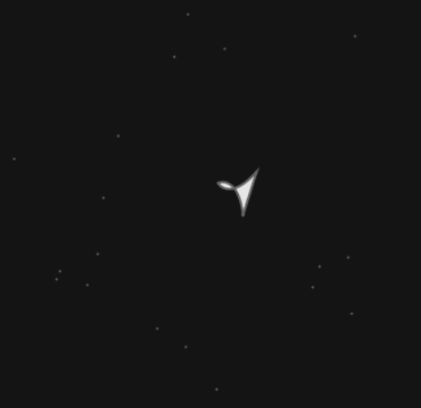
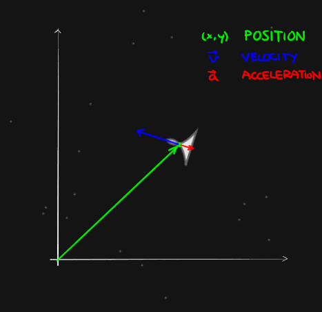
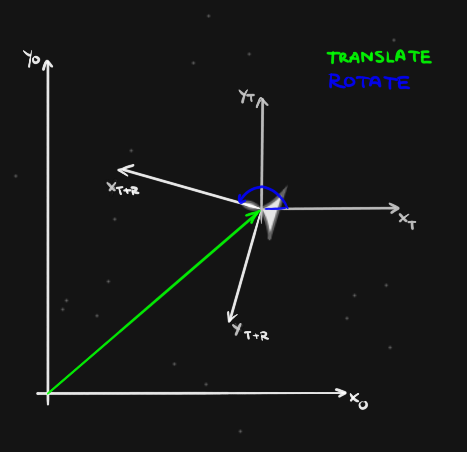

class: center, middle .title[Game Development 1] <br/><br/> .subtitle[Functions] <br/><br/><br/><br/><br/><br/> .date[Nov 2024] <br/><br/><br/> .note[Created with [Liminal](https://github.com/jonathanlilly/liminal) using [Remark.js](http://remarkjs.com/) + [Markdown](https://github.com/adam-p/markdown-here/wiki/Markdown-Cheatsheet) + [KaTeX](https://katex.org)] ??? Author: Grigore Burloiu, UNATC --- name: toc class: left # ★ Table of Contents ★ <!-- omit in toc --> 1. [Structuring your programs](#structuring-your-programs) 2. [Functions](#functions) 3. [Keyboard interactivity](#keyboard-interactivity) 4. [Drawing](#drawing) 5. [Variable scope](#variable-scope) 6. [Exercises](#exercises) 7. [Assignment I](#assignment-i) 8. [Physics](#physics) 9. [Assignment II](#assignment-ii) <!-- Comment out the next slide if you don't want the Table of Contents link --> --- layout: true .toc[[★](#toc)] --- name: structuring-your-programs # Structuring your programs an elegant program - is shorter than most alternatives - *conciseness* - consists of discrete/replaceable parts - *modularity* - is often the most efficient solution - *efficiency* - *E W Dijkstra, 2000. Denken als Discipline* <iframe width="100%" height="250px" src="https://www.youtube.com/embed/RCCigccBzIU?start=1050" title="YouTube video player" frameborder="0" allow="accelerometer; autoplay; clipboard-write; encrypted-media; gyroscope; picture-in-picture" allowfullscreen></iframe> -- - [counterpoint](https://youtu.be/7YpFGkG-u1w?t=1367) -- What role does programming elegance play in Game Dev? --- name: functions # Functions modularity reusability -- .left-column[ syntax ```lua function funcName(parameters) ... -- actions return result -- optional end ``` parameters ~ *arguments* ] -- .right-column[ p8 API function *calls* ```lua circfill(64,64,10,7) pressed = btnp(üÖæÔ∏è) ``` [p8 function](https://www.lexaloffle.com/dl/docs/pico-8_manual.html#PICO_8_Program_Structure) *definitions* ```lua function _update() print(t()) end ``` [custom function](https://www.lexaloffle.com/dl/docs/pico-8_manual.html#Functions_and_Local_Variables) defs & calls ```lua x = funcName(2) ``` ] --- name: common-uses ## common uses .left-column[ components ```lua function drawLeg(which) function playerState(state) ``` ] .right-column[ operations ```lua function linearEq(a, x, b) function gcd(a, b) ``` ] -- logging ```lua function debug() ``` -- .left-column[ [setters](https://www.lexaloffle.com/dl/docs/pico-8_manual.html#PSET) ```lua pset(40, 70, 14) fset(1, 0, true) ``` ] .right-column[ getters ```lua color = pget(40, 70) flags = fget(1, 0) ``` ] --- name: keyboard-interactivity # Keyboard interactivity [system functions](https://www.lexaloffle.com/dl/docs/pico-8_manual.html#Input) - `btn()`, `btnp()` ```lua -- standard buttons: ‚¨ÜÔ∏肨áÔ∏肨ÖÔ∏è‚û°Ô∏èüÖæÔ∏è‚ùé function _update() if (btn(üÖæÔ∏è)) then sfx(0) -- if O is held down end if (btnp(❎)) then sfx(1) -- if X was just pressed end end ``` -- custom [mouse and keyboard input](https://www.lexaloffle.com/dl/docs/pico-8_manual.html#Mouse_and_Keyboard_Input) - [lua strings](https://www.lexaloffle.com/dl/docs/pico-8_manual.html#Strings_and_Type_Conversion) --- name: drawing # Drawing .right-column[ - <img src="../attachments/p8-coords.png" width="75%"> - <img src="../attachments/p8-color.png" width="75%"> ] .left-column[ coordinate system colors ```lua circfill(x, y, radius, color) ``` [intro to lua](https://demoman.net/?a=intro-to-lua) @ demoman.net basic trig: `sin`, `cos`, [`atan2`](https://www.lexaloffle.com/dl/docs/pico-8_manual.html#ATAN2) randomness: [`rnd`](https://www.lexaloffle.com/dl/docs/pico-8_manual.html#RND) ] --- name: variable-scope # Variable scope ```lua function _init() clips = 0 end function _update() if btn(❎) then clips += 1 -- add a clip end end function _draw() cls() -- clear screen print(clips) end ``` -- variables in Lua are **global** by default to confine them to a block, declare them as `local`: ```lua function _init() local clips = 0 --cannot be accessed in _update() or _draw() end ``` --- name: exercises # Exercises modules ↔ functions <iframe width="600" height="444px" src="https://editor.p5js.org/RVirmoors/full/vCF1Kkl-c"></iframe> --- class: center ## Exercise: space minigame <iframe style="height:400px" height="400px" width="500px" frameborder="0" scrolling="no" src="p8/ship.html"> --- ## Exercise: space minigame .left-column[ starry background draw ship shape rotate arrows accelerate using button ] .right-column[  ] --- ## custom functions p8 uses [`spr()`](https://www.lexaloffle.com/dl/docs/pico-8_manual.html#SPR) to display a sprite but how to rotate it? -- look for [code](https://www.lexaloffle.com/bbs/?tid=2189) [online](https://www.lexaloffle.com/bbs/?tid=3593) implement in [your cart](p8/ship_funcs.p8) --- name: assignment-i # Assignment I call the functions in `ship_funcs.p8` in the `_draw()` and `_update()` functions upload a working `ship.p8` file --- name: physics # Physics remember [basic trig](#drawing) [vectors](https://natureofcode.com/book/chapter-1-vectors/) and [forces](https://natureofcode.com/book/chapter-2-forces/) p8 does not include any physics, you need to [code your own](https://heilaut.github.io/pico8-physics-simulations/) .left-column[  ] -- .right-column[  ] --- name: assignment-ii # Assignment II follow tutorials 1-4 in the [nerdy teachers platformer series](https://nerdyteachers.com/Explain/Platformer/) upload/link to another game that uses map collisions. write down - the function(s) involved (line, tab numbers) - any differences to the collision code in the tutorial <br/><br/> - attn: tuts 1,2,3 are easy. tut 4 is NOT. - use pencil & paper, have patience. ask around if something is unclear!